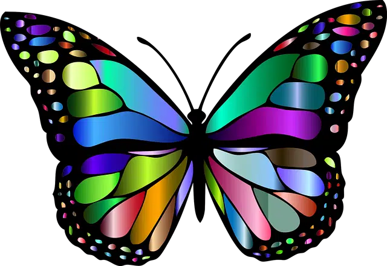

Sistemas informáticos · Representación de imágenes
De un píxel a una imagen para la web
Construye un color, transforma una imagen BMP y usa tus propios resultados para decidir qué formato conserva mejor la calidad con el menor tamaño.
¿Cómo se forma un color en pantalla?
Mezcla luz roja, verde y azul y observa cómo se codifica.
Tres cantidades forman cada píxel
Una pantalla mezcla luz roja, verde y azul. Cada componente puede tomar 256 valores, desde 0 (apagado) hasta 255 (máxima intensidad).
rgb(36, 107, 253)#246BFDLaboratorio de mezcla
24
6B
FD
Prueba una combinación preparada
Parte de una imagen sin comprimir
Usa esta mariposa BMP como referencia para todas las conversiones.

Mide e inspecciona los formatos
Abre cada archivo en el visor, aumenta el zoom y observa bordes, degradados y transparencias.
| Formato | Tamaño | Inspeccionar | Calidad respecto al BMP |
|---|---|---|---|
| BMP | 1,07 MiB | ||
| PNG | Sin añadir | ||
| JPG | Sin añadir | ||
| GIF | Sin añadir | ||
| WebP | Sin añadir | ||
| SVG | Sin añadir |
Faltan las cinco conversiones.
Comprueba lo que has aprendido
Responde a partir de lo que has observado, no solo de memoria.
Aún no has comprobado las respuestas.
Genera el informe de la práctica
El TXT incluirá color elegido, tamaños, calidad observada, respuestas, puntuación y conclusión.